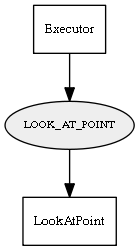

Global overview
All modules
All variables
All commands
Mission files
Pipelines
Variable: LOOK_AT_POINT
Variable info:
Variable name
Short description
Who publishes it?
Who subscribes to it?
LOOK_AT_POINT
The 2D absolute coordinates of the point to look at, in the format "[x y]"
Executor
LookAtPoint
Variable graph:

Detailed description:
The 2D absolute coordinates of the point to look at, in the format "[x y]"
Page generated by
Mooxygen 1.1.0
at Thu Jan 22 11:30:21 2015